PIXEL Fashion Show
Stella operated as the grandMA3 programmer, motion designer, and Disguise Programming assistant for the 2nd annual PIXEL fashion show. She designed lighting looks for 5 different collections, and graphics for one collection. She also assisted in D3 operation and media integration.
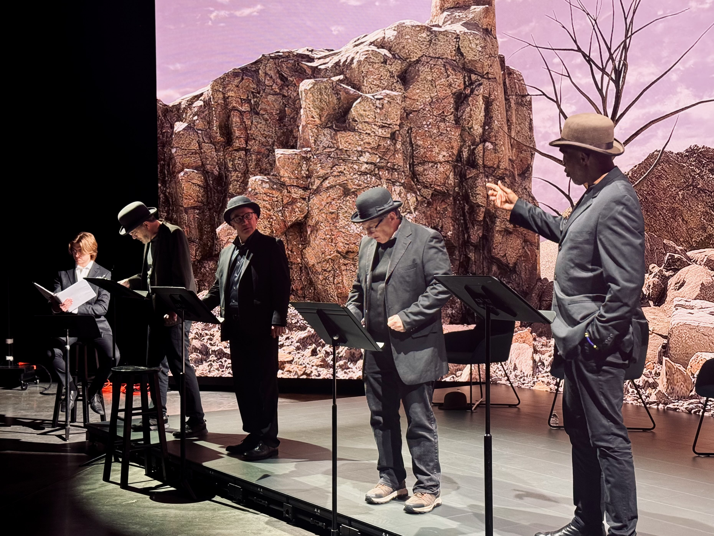
Waiting For Godot
Stella was the lead Pixera programmer and GrandMA3 LD for a reading of Waiting for Godot featuring Tony Freeman, Dion Graham, Eric Hissom, and Paul Kassel.
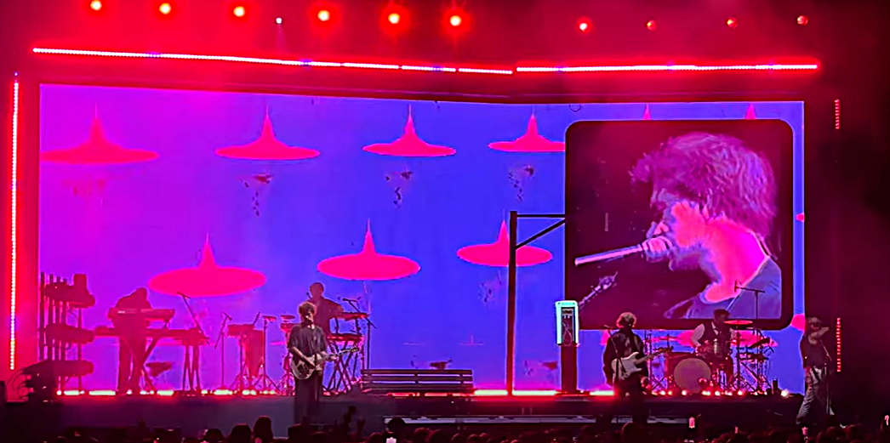
Obsession Tour - The Driver Era
Stella acted as a creative lead and motion designer for her team of 16 animators working on content and concepts for the Obsession Tour for The Driver Era. She worked with Cour Design, meeting with Erik Anderson weekly throughout the project to conceptualize, animate, revise, and finalize animation loops for the Tour. Stella had two animations which ended up being primary content for 'Turn the Music Up'. The content she made was made with Touchdesigner.

BLINK 2024 - Shadow Box
For BLINK 2024, Stella collaborated with a team to create a projection mapping animatic displayed on the YWCA during the festival. As one of two 3D animation leads, Stella contributed to five scenes in the final projection, showcasing her skills in animation and teamwork on this large-scale public art installation. This shadowbox scene was created using Procreate to create image planes and Blender to animate, light, and render the scene.
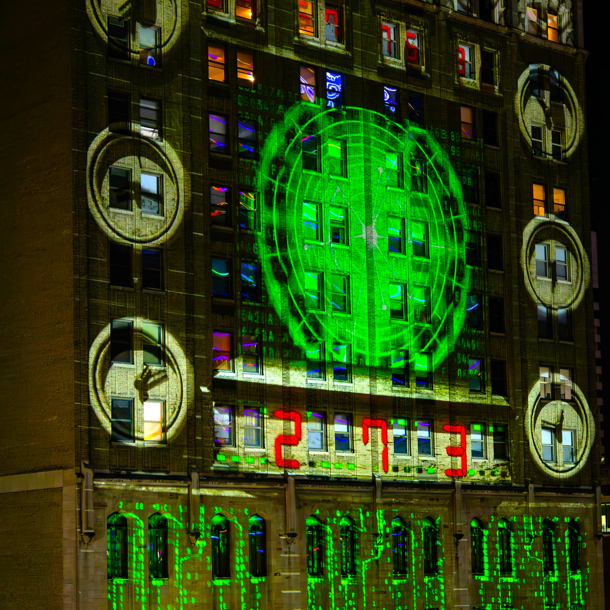
BLINK 2024 - Dials
For BLINK 2024, Stella collaborated with a team to create a projection mapping animatic displayed on the YWCA during the festival. As one of two 3D animation leads, Stella contributed to five scenes in the final projection, showcasing her skills in animation and teamwork on this large-scale public art installation. This scene was created in Blender based on concept art from one of the creative directors, Stella Hudson. The central sensor image was illustrated in Procreate, and elements of the render were created in TouchDesigner.
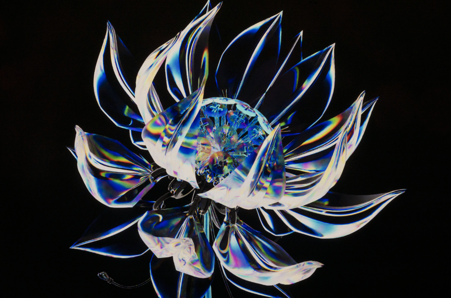
BLINK 2024 - Finale Flower
For BLINK 2024, Stella collaborated with a team to create a projection mapping animatic displayed on the YWCA during the festival. As one of two 3D animation leads, Stella contributed to five scenes in the final projection, showcasing her skills in animation and teamwork on this large-scale public art installation. This finale flower scene was modeled and animated in Blender, and then exported into Cinema4D where it was textured and rendered. The final cut had post processing done in After Effects.
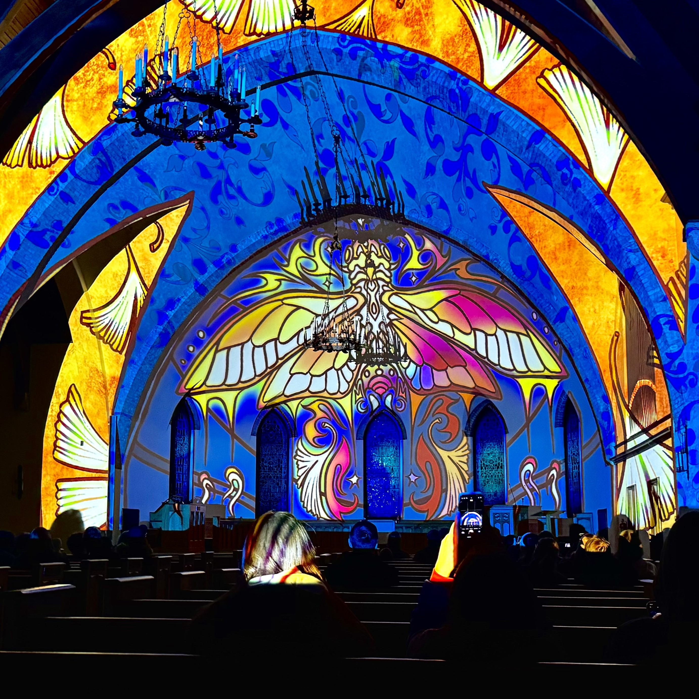
Year of the Cicada
Year of the Cicada is a one-minute solo projection mapping piece in Kumler Chapel in Oxford, Ohio. This audio-reactive project was meticulously mapped to the chapel's arched architecture, combining visual storytelling with technical precision. Inspired by the 17-year hibernation cycle of cicadas, the piece reflects Stella’s personal connection to this natural phenomenon, being born on a year when the cicadas emerged. The work is both a technical showcase and a personal statement, blending light, sound, and narrative. This piece was illustrated in Procreate and later animated and lit in TouchDesigner. Year of the Cicada was also featured in 2025 on Autodesk's Instructables front page.
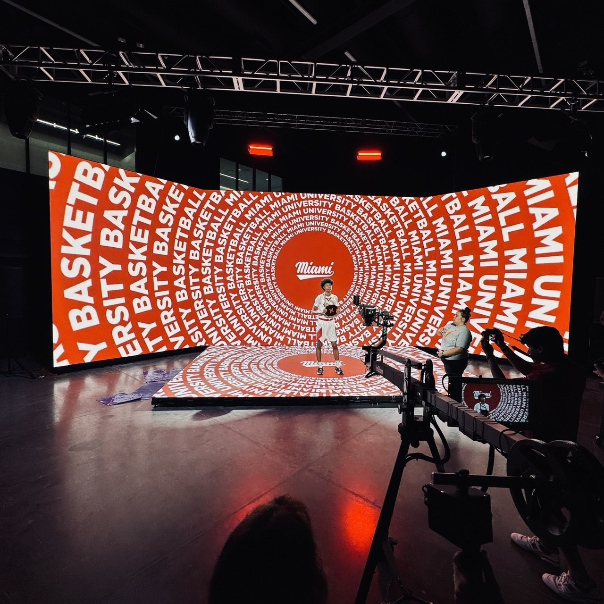
MU Basketball Shoot
Stella assisted in coordinating and running Miami University Men's Basketball videoshoot. Stella created many graphics in TouchDesigner which were used for player profiles, player introductions on social media and in games, and group shots. Stella also programmed and designed the lighting for this shoot.
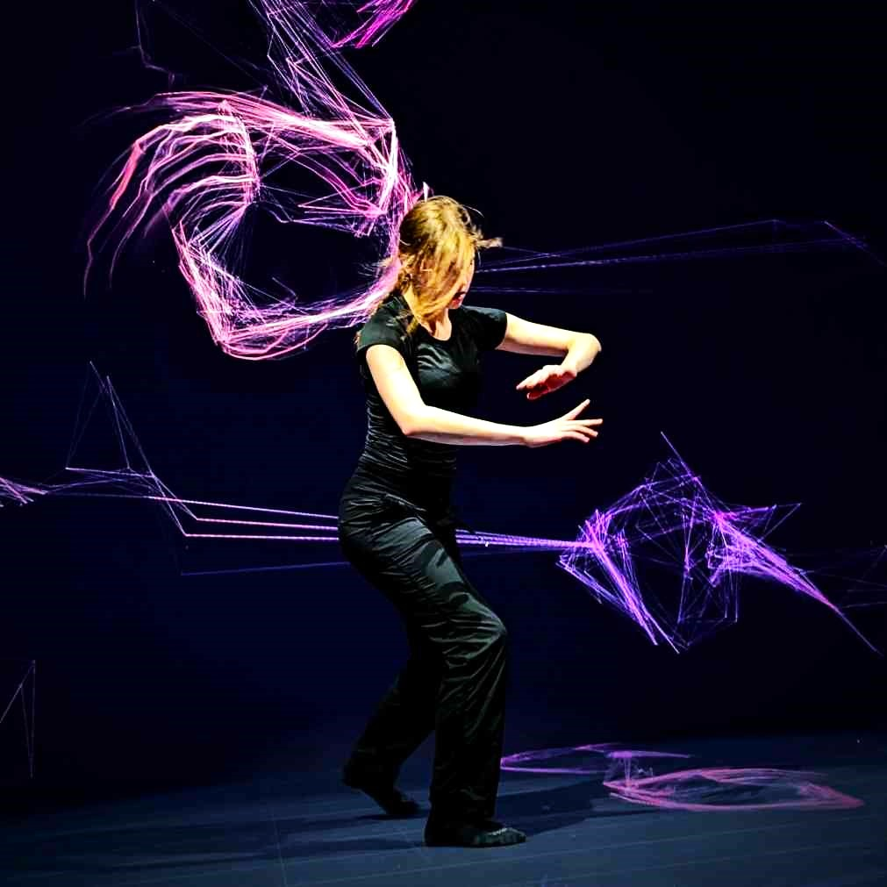
MUXR
As a lab technician at Miami University's XR Stage, Stella has contributed to a variety of events and tasks. She has assisted with client demos and workshops for visiting design firms, hosted tours of the facility, and played a key role in organizing events such as the Miami University Laptop Ensemble performance and videoshoots for Miami University's basketball teams. In addition to event coordination, Stella has created custom content for these events, using tools like Blender, TouchDesigner, MadMapper, and Procreate.

Tiny Blue Car
This tiny car model was created in an art test for Level Up Studio from an image provided by the company, which Stella later went onto work at as a 3D trainee. The textures and model were created and rendered in Blender.
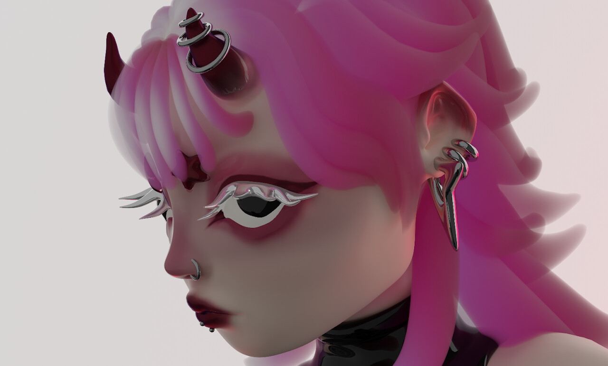
Seryph
Stella created Seryph as a character and anatomy study. The character was an original concept and modeled, textured, and rendered in Blender.
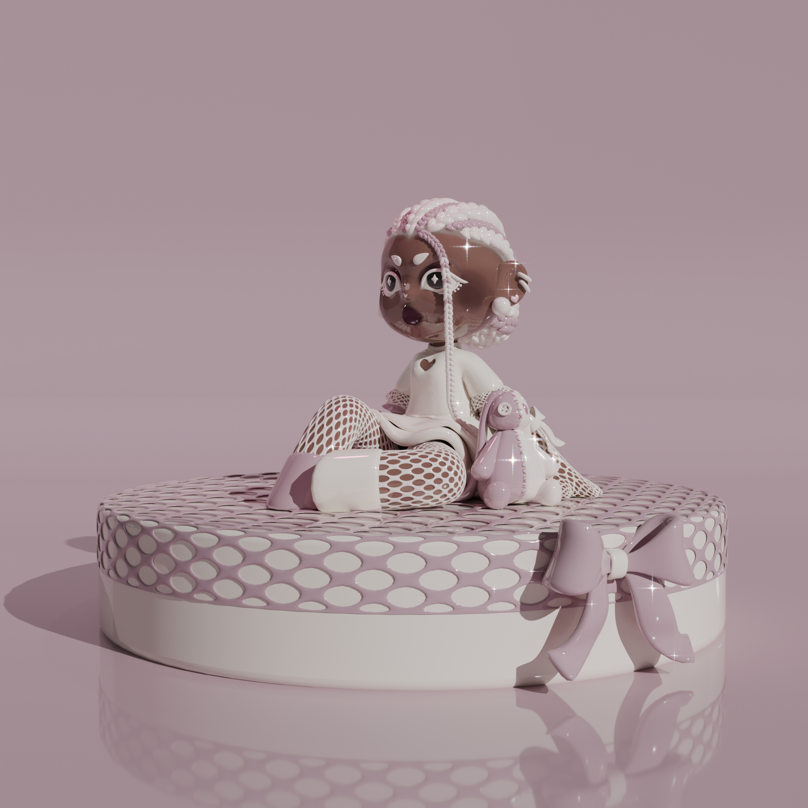
Pink Figurine
Inspired by Xiong Miao, Stella designed, modeled, textured, and rendered pink figurine as a study on the 3D model to 3D print pipeline. All textures and models were made and rendered in Blender.
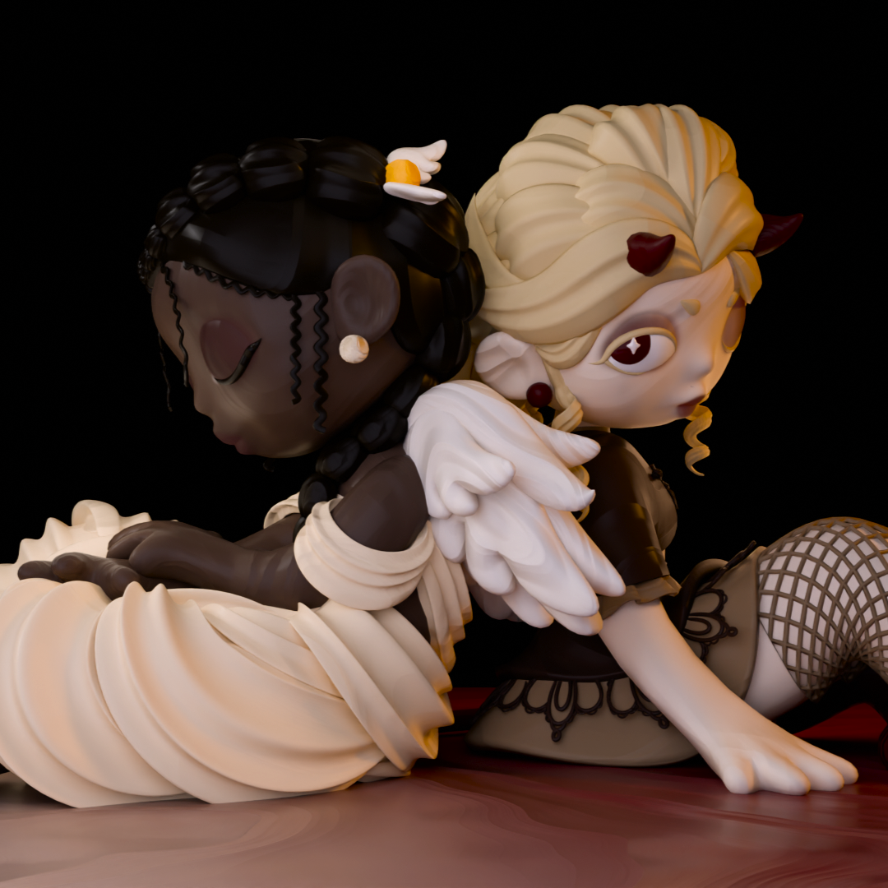
Angel/Devil Figurines
Similar to pink figurine, Stella designed and modeled Angel/Devil as another experiment with modeling 3D-figure-style models. She also wanted to experiment with contrast, lighting, character design, and texture; this model is the final product. Angel/Devil was made with Blender.
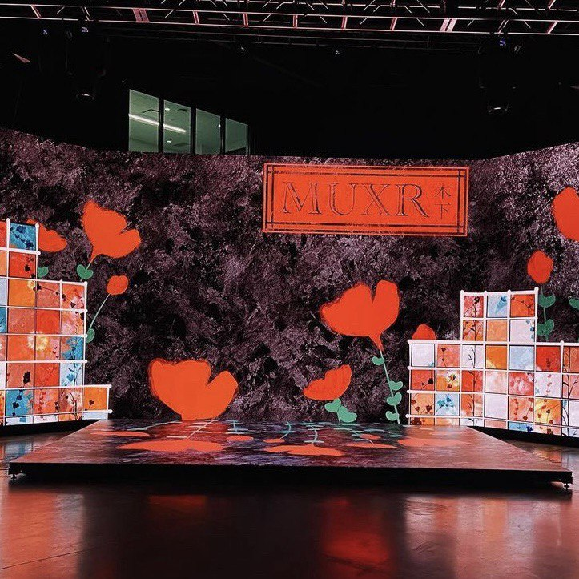
Stained Glass Garden
Stella created Stained Glass Garden with a combination of TouchDesigner, Blender, and Procreate to illustrate, animate, compile, and add post processing to the final scene.
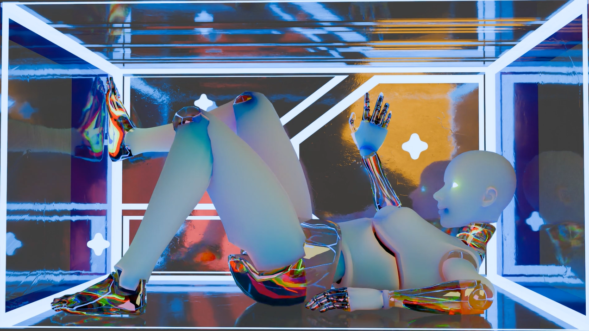
Sleeping Giant
As a final project for a 3D character animation course, Stella created Sleeping Giant, a robot character who sleeps in the illusion of a giant box, living as a projection mapping installation in McVey Data Science Building. Stella animated the model, which was downloaded from Sketchfab, and created textures and lighting for the scene.
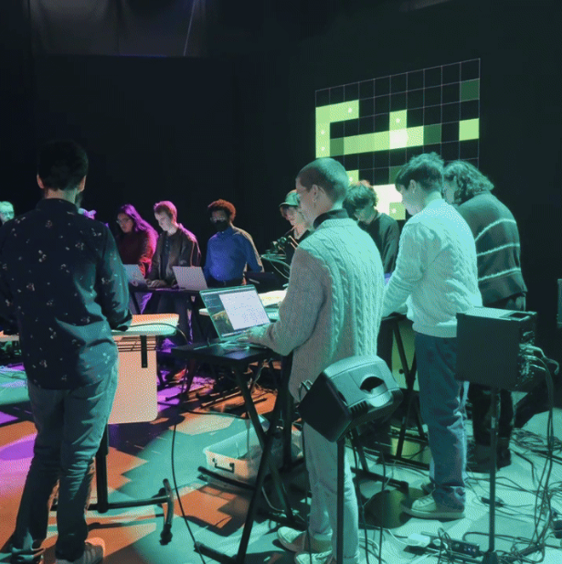
Laptop Ensemble Performance
Stella collaborated with Eric Sheffield to organize and coordinate the Miami University Laptop Ensemble (MULE) performance. MULE showcases electro-acoustic and digital music performed using laptops, tablets, sensors, controllers, synths, and other electronic instruments, blending technology and creativity. Stella developed a system to seamlessly switch between songs and scenes, programmed the event's lighting, and provided technical support to address challenges during setup and execution. Stella's contributions ensured the performance ran smoothly and delivered an engaging show for the audience.

Pixel Magazine 2024 Release
Stella collaborated with Pixel Magazine to produce a visual for their 2024 magazine release party. Working under a tight deadline, she created the visual and assisted with event setup in just a few hours. The visual was well-received by attendees, who were excited to learn that Stella was behind the creation. Her quick thinking and creative skills helped enhance the event’s atmosphere. The graphic was modeled, animated, and rendered in Blender.
WHY? Music Video
In the spring of 2024, Stella collaborated with Scott Fredette, Ben Nicholson, Yoni Wolf, and other students from Miami University to create content and program lighting for the 'G-dzillah G’dolah' music video. She developed over 100 visual concepts inspired by the song, many of which were featured in the final production. During the shoot, Stella worked closely with Scott's lighting designer, Jason Nix, to program the lighting for each shot, ensuring the visuals and lighting seamlessly complemented the music and overall aesthetic.

Tarot Illustrations pt.1
Stella has been designing and illustrating a custom tarot deck, blending traditional symbols and meanings with personal symbolism and references. Each card is designed to reflect her perspective and experiences while honoring the essence of traditional tarot. The entire deck is illustrated using Procreate. On the left, The Tower. On the right, The Star.

Tarot Illustrations pt.2
Stella has been designing and illustrating a custom tarot deck, blending traditional symbols and meanings with personal symbolism and references. Each card is designed to reflect her perspective and experiences while honoring the essence of traditional tarot. The entire deck is illustrated using Procreate. On the left, The Lovers. On the right, Justice.

Tarot Illustrations pt.3
Stella has been designing and illustrating a custom tarot deck, blending traditional symbols and meanings with personal symbolism and references. Each card is designed to reflect her perspective and experiences while honoring the essence of traditional tarot. The entire deck is illustrated using Procreate. On the left, Death. On the right, The Wheel of Fortune.

{kind=link}
{kind=link}
{kind=link}
{kind=link}
{kind=link}
{kind=link}
{kind=link}
{kind=link}
{kind=link}
{kind=link}
{kind=link}
{kind=link}
{kind=link}
{kind=link}